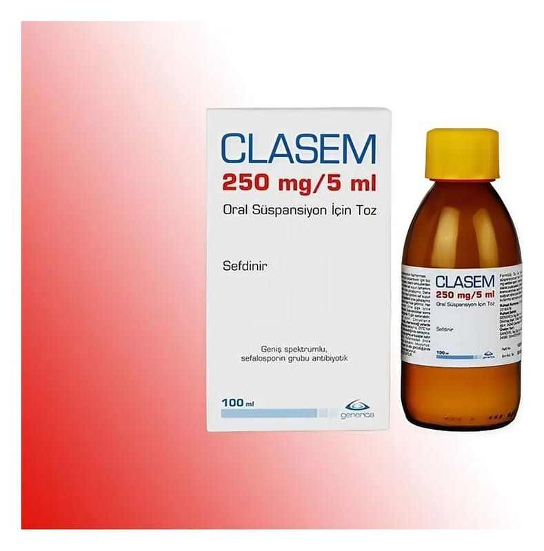

Clasem 250 mg/5 ml Oral Süspansiyon İçin Toz, 100 ml

Ne için kullanılır
KT · Bölüm 1CLASEM ağız yolu ile kullanılan ve sefalosporin olarak bilinen antibiyotik ilaç grubuna dahil olan sefdinir etkin maddesini içermektedir.
CLASEM şişede suyla karıştırılacak olan toz karışımı bulunmaktadır. Süspansiyon çilek ve krema aromalıdır ve kullanıma hazırdır. CLASEM, sulandırıldıktan sonra 100 ml oral süspansiyon veren toz içeren, kilitli kapak sistemine sahip, 200 ml’lik amber renkli cam şişe (100 ml’lik hacim kısmı işaretlenmiş), ölçek olarak kaşık ile birlikte karton kutu ambalajlarda takdim edilir.
Ergen ve yetişkinlerde:
a. Toplum kökenli akciğer iltihabında (zatürre, pnömoni), b. Kronik bronş iltihabının akut alevlenmesinde; c. Yüz kemiklerinin içindeki hava boşluklarının akut iltihabı (akut bakteriyel sinüzit), d.Bademcik (tonsillit)/ yutak (farenjit) iltihabı e. Komplike olmayan cilt ve yumuşak doku iltihaplarında;
Çocuklarda:
a. Orta kulak iltihabı (akut bakteriyel otitis media), b. Bademcik (tonsillit) ve yutak iltihabı (farenjit) c. Komplike olmayan cilt ve yumuşak doku iltihaplarında endikedir.